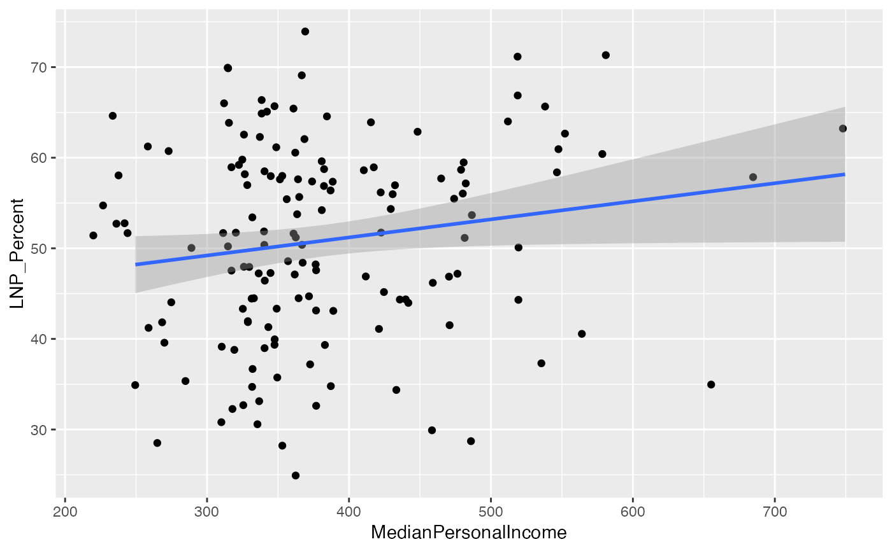

A dataset containing demographic and other information about each electorate from the Australian Census of Population and Housing.
The data were obtained from the Australian Bureau of Statistics, and downloaded from https://www.censusdata.abs.gov.au/datapacks/. Electorate boundaries match those in place at the time of the relevant data.
Census data for non-census years has been imputed. For more details on this process,
see the help vignette: vignette("imputing-census-data", package = "eechidna")
Data for 2004, 2007, 2013 and 2010 was updated in October 2019. The older versions can be found in the GitHub repository.
abs2001
abs2004
abs2006
abs2007
abs2010
abs2011
abs2013
abs2016
abs2019Data frames with the following variables, variables with an asterisk are only available in the 2001, 2006, 2011 and 2016 data sets.
UniqueID: Numeric identifier that links the electoral division with Census and other election datasets.
DivisionNm: Name of electorate
State: State containing electorate
Population: Total population of electorate
Area*: Area of electorate division in square kilometres
Age00_04: Percentage of people aged 0-4.
Age05_14: Percentage of people aged 5-9.
Age15_19: Percentage of people aged 15-19.
Age20_24: Percentage of people aged 20-24.
Age25_34: Percentage of people aged 25-34.
Age35_44: Percentage of people aged 35-44.
Age45_54: Percentage of people aged 45-54.
Age55_64: Percentage of people aged 55-64.
Age65_74: Percentage of people aged 65-74.
Age75_84: Percentage of people aged 75-84.
Age85plus: Percentage of people aged 85 or higher.
Anglican: Percentage of people affiliated with the Anglican denomimation
AusCitizen: Percentage of people who are Australian Citizens
AverageHouseholdSize: Average number of people in a household
BachelorAbv: Percentage of people who have completed a Bachelor degree or above
Born_Asia: Percentage of people born in Asia
Born_MidEast: Percentage of people born in the Middle East
Born_SE_Europe: Percentage of people born in South Eastern Europe
Born_UK: Percentage of people born in the United Kingdom
BornElsewhere: Percentage of people who were born overseas, outside of Asia, Middle East, South Eastern Europe and the UK
BornOverseas_NS*: Percentage of people who did not answer the question relating to birthplace
Buddhism: Percentage of people affiliated with the Buddhist religion
Catholic: Percentage of people affiliated with the Catholic denomimation
Christianity: Percentage of people affiliated with the Christian religion (of all denominations)
Couple_NoChild_House: Percentage of households made up of a couple with no children
Couple_WChild_House: Percentage of households made up of a couple with children
CurrentlyStudying: Percentage of people who are currently studying
DeFacto: Percentage of people who are in a de facto marriage
DiffAddress: Percentage of people who live at a different address to what they did 5 years ago
DipCert: Percentage of people who have completed a diploma or certificate
Distributive: Percentage of employed persons who work in wholesale trade, retail trade, transport, post or warehousing related industries
EmuneratedElsewhere: Percentage of people who receive emuneration outside of Australia, out of the total population plus overseas visitors
EnglishOnly: Percentage of people who speak only English
Extractive: Percentage of employed persons who work in extractive industries (includes mining, gas, water, agriculture, waste, electricity)
FamilyIncome_NS*: Percentage of people who did not answer the question relating to family income
FamilyRatio: Average number of people per family
Finance: Percentage of employed persons who work in finance or insurance related industries
HighSchool: Percentage of people who have completed high school
HighSchool_NS*: Rate of nonresponse for questions relating to high school completion
HouseholdIncome_NS*: Percentage of people who did not answer the question relating to household income
Indigenous: Percentage of people who are Indigenous
InternetAccess: Percentage of people with access to the internet
InternetAccess_NS*: Rate of nonresponse for questions relating to internal access
InternetUse: Percentage of people who used internet in the last week (2001 only)
InternetUse_NS*: Rate of nonresponse for questions relating to internet use (2001 only)
Islam: Percentage of people affiliated with the Islamic religion
Judaism: Percentage of people affiliated with the Jewish religion
Laborer: Percentage of employed persons who work as a laborer
Language_NS*: Rate of nonresponse for questions relating to language spoken at home
LFParticipation: Labor force participation rate
ManagerAdminClericalSales: Percentage of employed persons who work in management, administration, clerical duties and sales
Married: Percentage of people who are married
MedianAge: Median age
MedianFamilyIncome: Median weekly family income (in $)
MedianHouseholdIncome: Median weekly household income (in $)
MedianLoanPay: Median mortgage loan repayment amount (of mortgage payments, in $)
MedianPersonalIncome: Median weekly personal income (in $)
MedianRent: Median weekly rental payment amount (of those who rent, in $)
Mortgage: Percentage of dwellings that are on a mortgage
NoReligion: Percentage of people with no religion
OneParent_House: Percentage of households made up of one parent with children
Other_NonChrist: Percentage of people affiliated with a religion other than Christianity, Buddhism, Islam and Judaism
OtherChrist: Percentage of people affiliated with a denomination of the Christian religion other than Anglican or Catholic
OtherLanguageHome: Percentage of people who speak a language other than English at home
Owned: Percentage of dwellings that are owned outright
PersonalIncome_NS*: Rate of nonresponse for questions relating to personal income
Professional: Percentage of employed persons who work as a professional
PublicHousing: Percentage of dwellings that are owned by the government, and rented out to tenants
Religion_NS*: Rate of nonresponse for questions relating to religion
Rent_NS*: Rate of nonresponse for questions relating to rental costs
Renting: Percentage of dwellings that are being rented
SocialServ: Percentage of employed persons who work in education and training, healthcare, social work, community, arts and recreation
SP_House: Percentage of households occupied by a single person
Tenure_NS*: Rate of nonresponse for questions relating to tenure
Tradesperson: Percentage of employed persons who specialise in a trade
Transformative: Percentage of employed persons who work in construction or manufacturing related industries
Unemployed: Unemployment rate
University_NS*: Rate of nonresponse for questions relating to University
Volunteer: Percentage of people who work as a volunteer
Volunteer_NS*: Rate of nonresponse for questions relating to working as a volunteer
An object of class data.frame with 150 rows and 70 columns.
library(eechidna)
library(dplyr)
data(abs2001)
abs2001 %>% select(DivisionNm, MedianAge, Unemployed, NoReligion, MedianPersonalIncome) %>% head()
#> DivisionNm MedianAge Unemployed NoReligion MedianPersonalIncome
#> 1 ADELAIDE 37 7.779892 19.673954 349.5
#> 2 ASTON 34 4.722118 18.054206 449.5
#> 3 BALLARAT 35 8.957760 18.771159 349.5
#> 4 BANKS 37 5.301010 9.693882 349.5
#> 5 BARKER 38 6.330406 21.711487 349.5
#> 6 BARTON 37 5.802002 10.540373 449.5
# Join with two-party preferred voting data
library(ggplot2)
data(tpp01)
election2001 <- left_join(abs2001, tpp01, by = "UniqueID")
# See relationship between personal income and Liberal/National support
ggplot(election2001, aes(x = MedianPersonalIncome, y = LNP_Percent)) +
geom_jitter() +
geom_smooth(method='lm')
#> `geom_smooth()` using formula = 'y ~ x'
